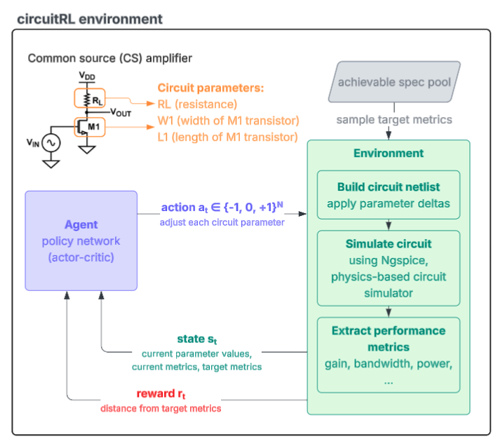

Analog and mixed-signal circuit design is still one of the biggest bottlenecks in hardware development. Unlike digital design, a lot of the work still comes down to manual tuning and running the same simulations over and over until a circuit finally meets its targets.
circuitRL is a project I worked on with two friends for our final project in CS234: Reinforcement Learning. We wanted to see whether reinforcement learning could help automate circuit sizing by treating it as a sequential decision problem, where an agent adjusts transistor parameters and gets feedback from Ngspice simulations. We trained PPO and GRPO agents on a few different analog circuit topologies and compared standard flat-vector inputs with graph-based representations of the circuits. We were excited to be able to show transfer learning between circuit topologies using the graph-based approach. We also experimented with discrete and continuous action spaces, and network architecture ie. shared trunk and non-shared trunk actor-critic networks.
